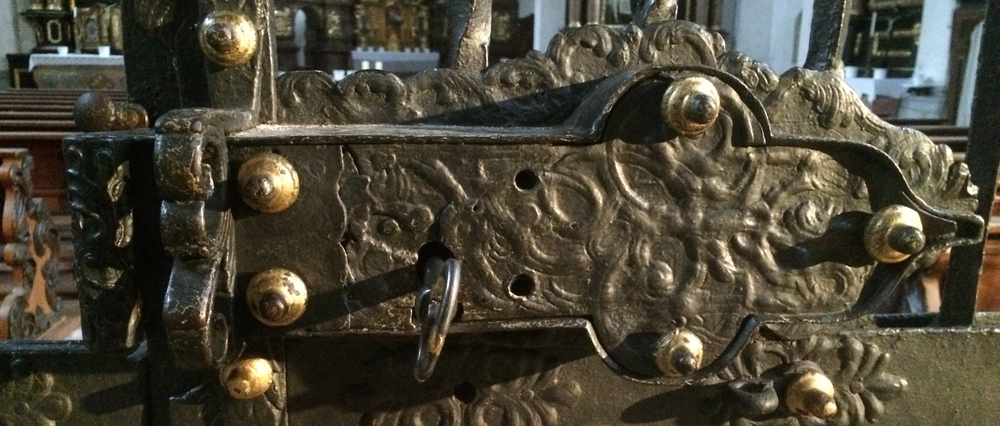
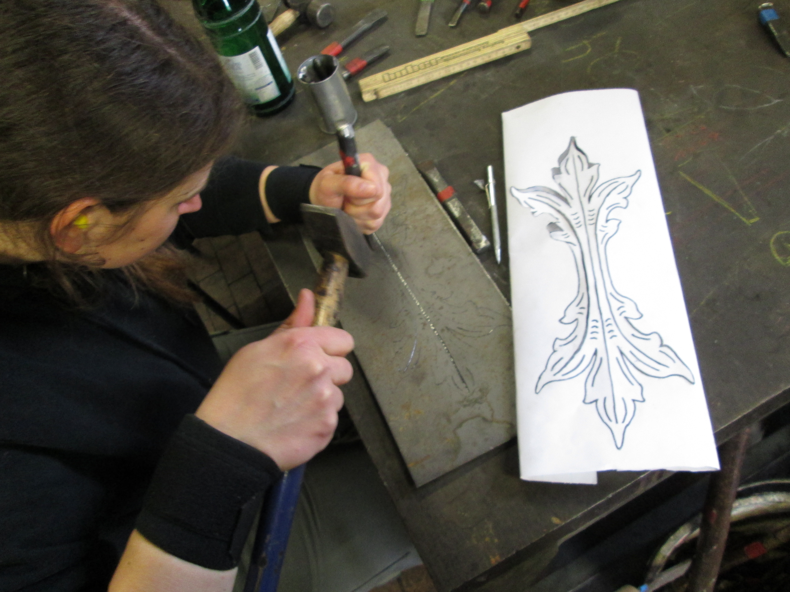
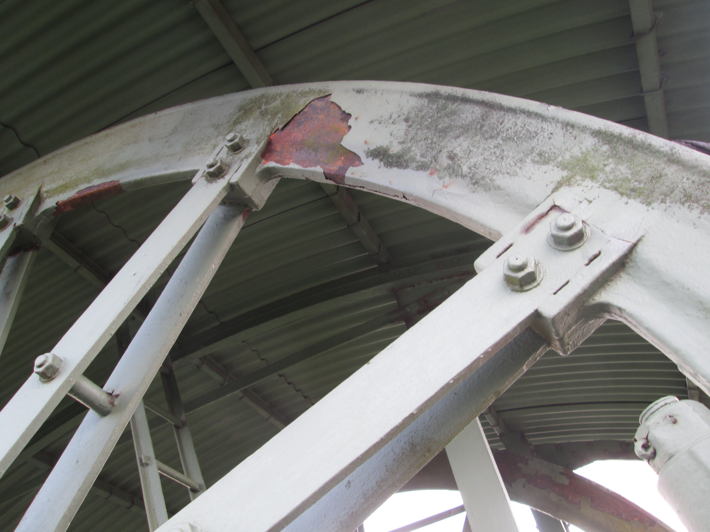

Metallrestaurierung
 „Die Restaurierung besteht in einem unmittelbaren Tätigwerden an beschädigten oder verfallenen Kulturgütern, mit dem Ziel, eine bessere Lesbarkeit herzustellen, wobei ihre ästhetische, historische und materielle Unversehrtheit soweit wie möglich zu wahren ist.“
„Die Restaurierung besteht in einem unmittelbaren Tätigwerden an beschädigten oder verfallenen Kulturgütern, mit dem Ziel, eine bessere Lesbarkeit herzustellen, wobei ihre ästhetische, historische und materielle Unversehrtheit soweit wie möglich zu wahren ist.“
E.C.C.O. Berufsrichtlinien: Der Beruf des Restaurators

Wir führen Metallrestaurierungen nach restauratorischen Grundsätzen wie Substanzerhalt, Reversibilität und Maßnahmentransparenz durch.
Wesentlicher Bestandteil dieser Arbeit sind Bestandsaufnahme, Dokumentation und Ausarbeitung von Restaurierungskonzepten.

Erhaltung, Konservierung und Pflege des Bestandes stehen an erster Stelle. Für ergänzende Arbeiten führen wir Rekonstruktionen und Kopien von Metallarbeiten aller Epochen durch, unter Zuhilfenahme historischer Arbeitstechniken wie z.B. Feuerschweißen und Vergolden.

Referenzen
Bayerisches Landesamt für Denkmalpflege
Bayerische Verwaltung der staatlichen Schlösser, Gärten und Seen
Staatliches Bauamt Freising/>
Neues Schloß Schleißheim
Schloß Lustheim
Schloß Nymphenburg
Neue Residenz Bamberg
Oberharzer Bergbaumuseum Clausthal-Zellerfeld
Stiftskirche der Benediktinerabtei St. Michael, Metten
Ehemalige Wallfahrtskirche St. Corona, Altenkirchen
Pfarrkirche St. Konrad, Landshut
Schloß Gerzen
Pfarrkirche St. Michael, Reisbach
St. Bartholomäus Hirschkofen